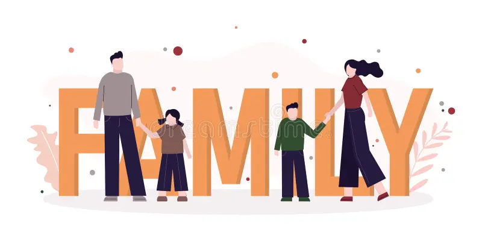

Home
Laços que Educam e Inspiram: Um Dia dos Pais Inesquecível
O pátio da escola ganhou cores, sorrisos e uma energia completamente diferente na manhã do nosso evento especial de
Dia dos Pais. Mais do que uma simples data no calendário,
o encontro foi planejado como uma pausa na rotina corrida para celebrar o afeto,
a parceria e as memórias que constroem a base da vida de nossos alunos.
data em um capítulo inesquecível na história da nossa comunidade escolar.
A programação começou com um acolhedor café da manhã comunitário, onde pais,
avôs, tios e figuras paternas puderam conversar, relaxar e compartilhar momentos ao
lado das crianças. Em seguida, os corredores se transformaram em palcos de integração.
Oficinas de arte ao ar livre, jogos cooperativos na quadra e estações de contação de
histórias garantiram gargalhadas e muita cumplicidade. Ver os adultos voltando a ser crianças ao
lado de seus filhos foi o verdadeiro destaque do dia.
O ponto alto da celebração aconteceu no auditório,
com as apresentações preparadas pelas turmas durante semanas. Entre canções ensaiadas
com dedicação e cartinhas escritas à mão cheias de desenhos espontâneos, não faltaram
olhares marejados e abraços apertados. O evento fez questão de valorizar
a pluralidade de todas as configurações familiares, reconhecendo a importância de cada pessoa
que exerce com amor o papel de guiar, proteger e inspirar nossos estudantes.
Encerrar a jornada com o mural de fotos da família repleto de mensagens carinhosas reforçou
a certeza de que a educação se faz assim: de mãos dadas com quem amamos.
Agradecemos a presença de cada família que transformou esta data em um capítulo inesquecível na
história da nossa comunidade escolar.
